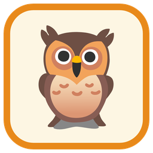
ABC-Abenteuer
Lesen und Schreiben lernen mit Augensteuerung – Anleitung für Lehrkräfte und Eltern
Version 4.1 · Stand 19.11.2026
1. Starten und Beenden
Das Programm braucht kein Internet. Es ist ein eigenes Windows-Programm und arbeitet direkt mit der Augensteuerung des Tobii-Geräts zusammen.
Installieren
Das ABC-Abenteuer muss nicht installiert werden. Es kommt als ZIP-Datei und läuft direkt aus seinem Ordner.
- Auf der GitHub-Seite des ABC-Abenteuers rechts auf „Releases“ klicken und die neueste Datei „ABC-Abenteuer-…zip“ herunterladen (z. B. „ABC-Abenteuer-4.1.zip“).
- Vor dem Entpacken: Rechtsklick auf die ZIP-Datei → „Eigenschaften“ → unten den Haken bei „Zulassen“ setzen → OK. Dann zeigt Windows beim Start keine Warnung.
- Rechtsklick auf die ZIP-Datei → „Alle extrahieren …“, z. B. in „Dokumente“.
Starten und Beenden
- Doppelklick auf „ABC-Abenteuer.exe“ (das Eulen-Symbol). Tipp: Rechtsklick → „Senden an“ → „Desktop (Verknüpfung erstellen)“, dann ist die Eule auch auf dem Desktop.
- Das Programm öffnet sich bildschirmfüllend. Auf „Los geht's!“ schauen oder klicken – bzw. bei eingeschalteten Profilen auf das eigene Bild („Wer spielt?“).
- Beenden: im Menü zweimal die Tür 🚪 auswählen (oder mit der Maus doppelklicken) und die Frage „Möchtest du das ABC-Abenteuer beenden?“ mit Ja beantworten. Alternativ Alt + F4.
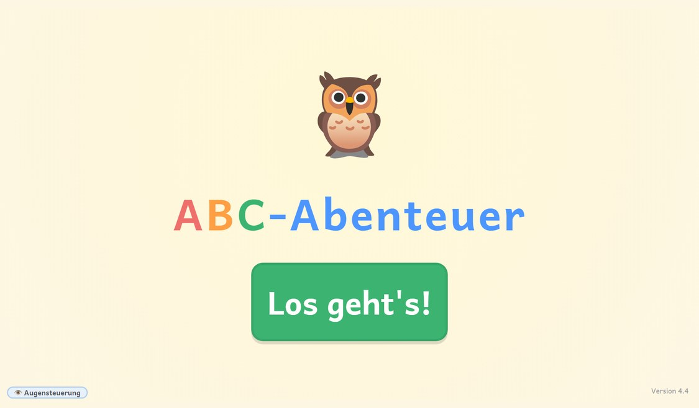
Die Spielfläche passt sich automatisch an jede Bildschirmgröße an. Den Ordner immer vollständig kopieren – also ABC-Abenteuer.exe zusammen mit dem Ordner files. Der Ordner files darf umbenannt werden; die Eule findet das Programm trotzdem.
2. Bedienung mit den Augen
Das Programm bekommt den Blick direkt von der Augensteuerung. Das Kind muss nur auf eine Kachel schauen – ein Kreis füllt sich, und nach der Verweilzeit ist die Kachel ausgewählt. Es muss weder einen Mauszeiger steuern noch klicken.
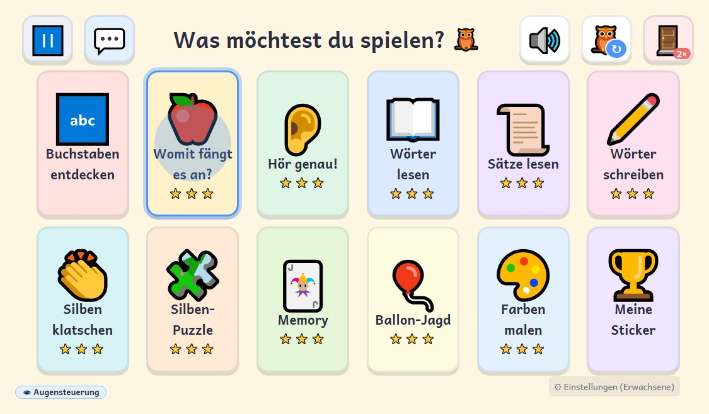
- Genaues Zielen ist nicht nötig: Ein Blick knapp daneben oder in die Lücke zwischen zwei Kacheln zählt für die nächste Kachel („Magnet“). Kleines Augenzittern wird ausgeglichen.
- Kurzes Wegschauen setzt den Kreis nicht zurück.
- Lupe für die Knöpfe oben: Geht der Blick in die obere Leiste (🏠 💬 🔊 …), werden diese Knöpfe vergrößert und hell hinterlegt; die großen Kacheln darunter zählen in dem Moment nicht (im Menü werden sie zusätzlich etwas blasser, in den Spielen bleiben sie unverändert). So lassen sich auch die kleinen Knöpfe sicher treffen. Sobald der Blick wieder nach unten geht, verschwindet die Lupe. Bei Pause erscheint die Lupe nur, wenn der Blick wirklich auf ▶️ liegt – und vergrößert nur diesen Knopf. Abschaltbar in den Einstellungen.
- Erst zuhören: Solange die Eule in einer Übung die Aufgabe vorliest (und der Ton an ist), wird nichts ausgewählt – unten links steht dann „🔊 Erst zuhören …“. Im Menü, bei der Tür und beim Pause-Knopf gilt das nicht. Die Mitteil-Tafel funktioniert immer.
- Ruhige Knöpfe: In den Übungen sprechen die Knöpfe oben (🏠 💬 🔊 …) beim Anschauen nicht. Antwort-Kacheln werden – wo es die Lösung nicht verrät – beim Anschauen vorgelesen.
- Kein Doppel-Auswählen: Wer nach einer Auswahl einfach weiter auf dieselbe Stelle schaut, löst auf dem nächsten Bildschirm nicht sofort wieder etwas aus. Erst wenn der Blick weiterwandert, gilt wieder die normale Verweilzeit.
- Nur im Vordergrund: Ist das Programm minimiert oder ein anderes Fenster im Vordergrund, ruht die Augensteuerung. Sobald das Programm wieder vorne ist, geht es weiter.
- Die Maus bleibt frei: Der Mauszeiger ist sichtbar, und die Betreuungsperson kann dem Kind damit etwas zeigen. Solange die Augen erkannt werden, wählt nur der Blick aus (siehe unten).
Einrichten
- TD Control darf ganz normal weiterlaufen – seine Klicks werden über dem ABC-Abenteuer automatisch gesperrt (siehe unten).
- Die Verweilzeiten unter „⚙ Einstellungen“ anpassen – getrennt für die großen Kacheln (Standard 1,8 Sekunden) und die Knöpfe oben 🏠 🔊 ⏸️ (Standard 1,2 Sekunden). Wird zu viel aus Versehen ausgewählt: länger einstellen.
- Unten links steht „👁 Augensteuerung“. Die Augensteuerung ist immer aktiv – pausieren kann das Kind selbst mit ⏸️. In den Einstellungen steht, ob die Augen gerade erkannt werden.
Pause-Knopf ⏸️ – für das Kind
Oben links (im Menü und in jedem Spiel, links neben 🏠) gibt es den Knopf ⏸️. Schaut das Kind ihn an, pausiert die Augensteuerung: Nichts wird mehr ausgewählt, das Kind kann sich in Ruhe umschauen. Unten links steht dann klein „⏸ Pause – weiter mit ▶️“. Schaut es auf ▶️, geht es weiter.
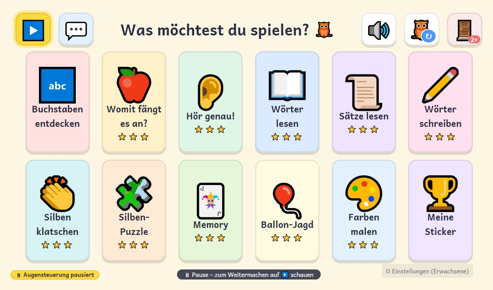
Klicks von TD Control werden gesperrt – Betreuer können immer klicken
Ist die Augensteuerung aktiv, zählt für das Kind nur der Blick. Klicks, die TD Control (oder eine andere Software) auslöst, werden über dem ABC-Abenteuer verschluckt – so wird nie schneller oder doppelt ausgewählt, als die eingestellte Verweilzeit vorgibt. Echte Klicks der Betreuungsperson mit Maus, Touchpad oder Finger kommen dagegen immer an. Menüs von TD Control außerhalb des ABC-Abenteuers bleiben normal bedienbar.
In den Einstellungen unter „Klicks während der Augensteuerung“ lässt sich das ändern: „nur Klicks von TD Control sperren“ (Standard), „alle Klicks sperren, solange Augen erkannt werden“, „alle Klicks immer sperren“ oder „alle Klicks erlauben“. Darunter zeigt der Status, wie viele Klicks gesperrt wurden.
Tasten
| Taste | Wirkung |
|---|---|
| F8 | Ton an / aus |
| F9 | ohne Tobii-Augensteuerung: Auswählen durch Verweilen mit dem Mauszeiger an / aus |
| Alt + F4 | Programm beenden |
3. Das Menü
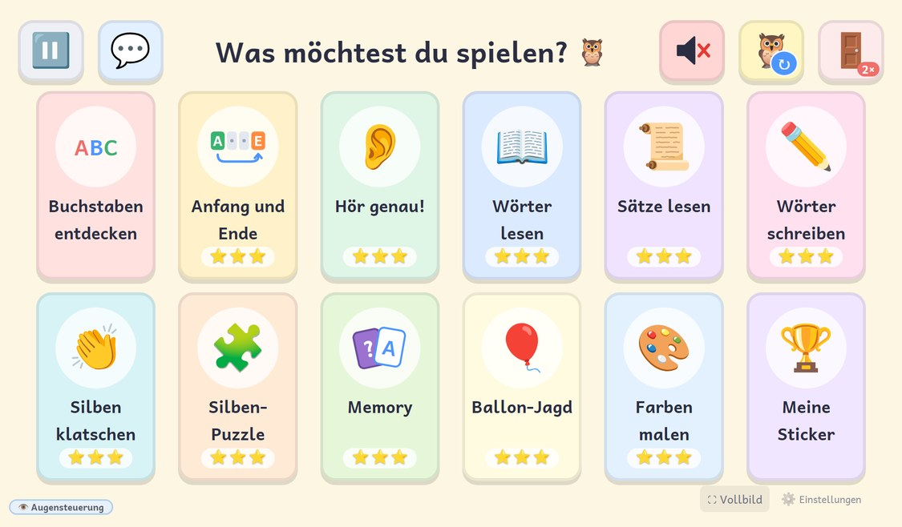
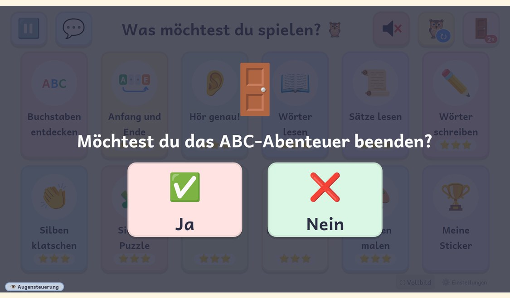
| Knopf | Bedeutung |
|---|---|
| 💬 | Mitteil-Tafel – das Kind kann sich mitteilen (siehe Kapitel 7). Gibt es im Menü und in jedem Spiel. |
| 🔊 / 🔇 | Ton an / aus (bei „aus“ rot hinterlegt) |
| mit ↻ | Die Eule liest die Aufgabe noch einmal vor |
| 🏠 | (im Spiel) zurück ins Menü |
| ⏸️ | Augensteuerung pausieren / ▶️ weitermachen |
| 🚪 | (im Menü) Programm beenden. Das kleine Schild „2ד zeigt: zweimal auswählen (oder mit der Maus doppelklicken). Wer nach dem ersten Mal einfach weiter auf die Tür schaut, löst nach der Verweilzeit automatisch das zweite Mal aus. Die Ansage dazu unterbricht die Augensteuerung nicht. Danach kommt die Frage „Möchtest du das ABC-Abenteuer beenden?“ mit Ja und Nein. |
| ⚙ | Einstellungen: kleines graues Zahnrad mit dem Wort „Einstellungen“ unten rechts – nur für Erwachsene, nicht per Blick auswählbar |
4. Die drei Stufen
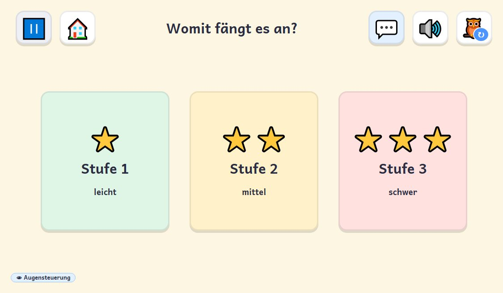
Jedes Spiel (außer „Buchstaben entdecken“) hat drei Stufen: ⭐ leicht, ⭐⭐ mittel, ⭐⭐⭐ schwer.
- Freischalten: Wer eine Stufe dreimal mit höchstens 2 Fehlern schafft, schaltet die nächste frei. Wie oft, lässt sich in den Einstellungen ändern (1–5 Runden).
- In den Einstellungen kann man auch alle Stufen sofort freischalten oder die Freischaltungen zurücksetzen.
- Oben im Spiel zeigen die Sterne links die Stufe, die Sterne daneben den Fortschritt in der Runde.
5. Die Spiele
In allen Spielen spricht die Eule Emil die Aufgabe vor, lobt und hilft. Nach dem zweiten Fehler leuchtet die richtige Antwort auf. Wörter, die gerade dran waren, kommen erst wieder, wenn die anderen durch sind – auch über mehrere Tage.
🔤 Buchstaben entdecken
Freies Erkunden aller Buchstaben von A bis Z: Buchstabe antippen → großes Bild, Wort und Aussprache („M wie Maus“). Mit ➡️ kommt ein weiteres Bild zum gleichen Buchstaben. Bereits geübte Buchstaben sind gelb hinterlegt.
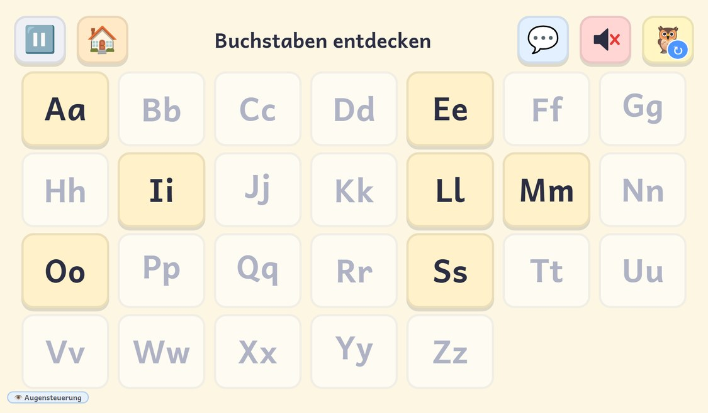
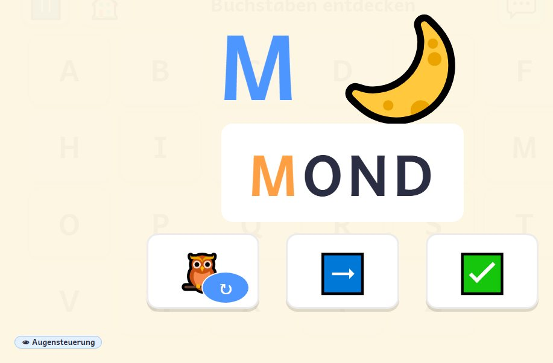
🍎 Womit fängt es an?
Anlaute erkennen – drei Aufgabenarten im Wechsel:
- Bild → Anfangsbuchstabe: „Womit fängt der Anker an?“
- Buchstabe → Bild: „Was fängt mit dem Buchstaben R an?“
- Endlaut (nur Stufe 3): „Hör genau auf das Ende! Womit hört das Auto auf?“
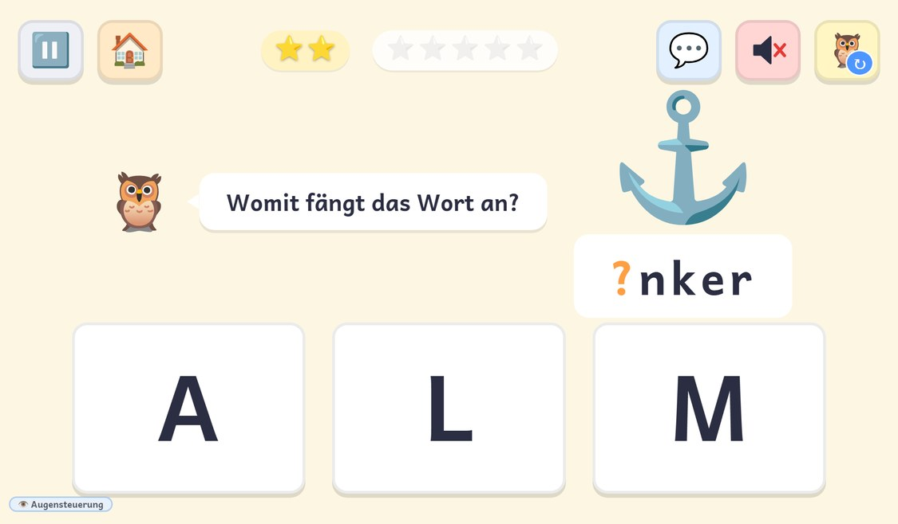
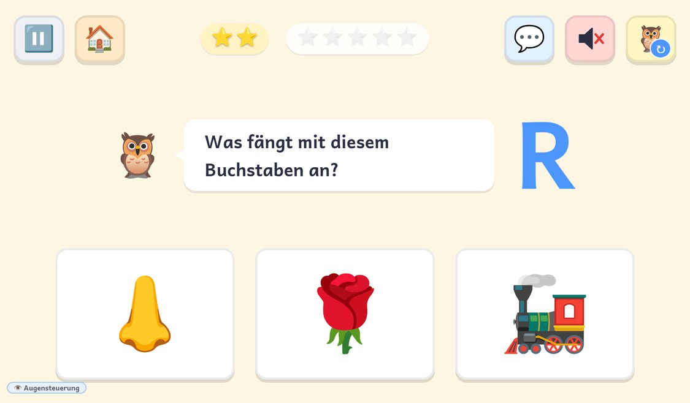
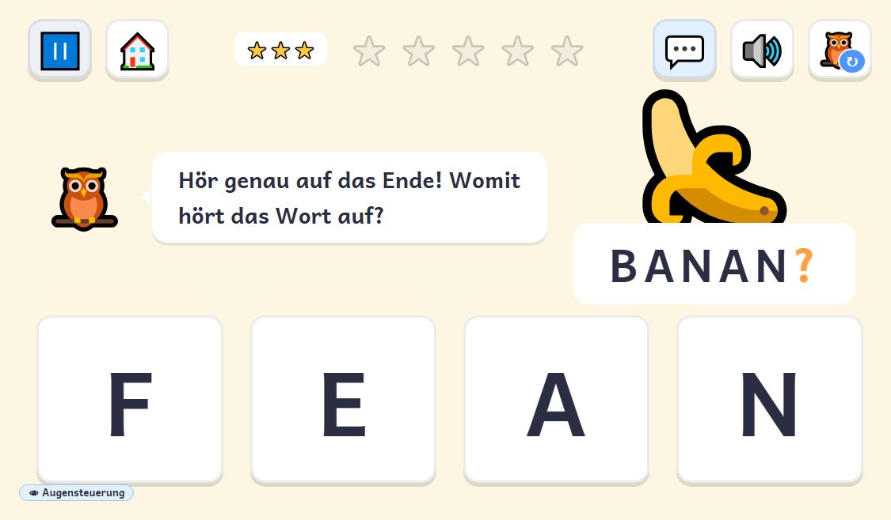
| ⭐ | 2 Antworten |
| ⭐⭐ | 3 Antworten |
| ⭐⭐⭐ | 4 Antworten, ähnliche Buchstaben, zusätzlich Endlaute |
👂 Hör genau!
Ein Buchstabe wird gesprochen („Wo ist der Buchstabe A? A wie Ameise.“), das Kind sucht ihn.
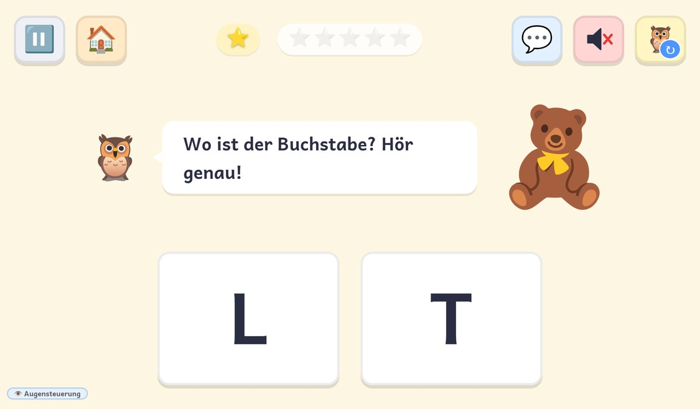
| ⭐ | 2 Buchstaben, mit Bild |
| ⭐⭐ | 3 Buchstaben, mit Bild |
| ⭐⭐⭐ | 4 ähnliche Buchstaben, ohne Bild – nur hören |
📖 Wörter lesen
Ein Wort lesen und das passende Bild finden – oder umgekehrt. Die Silben sind farbig markiert (abschaltbar).
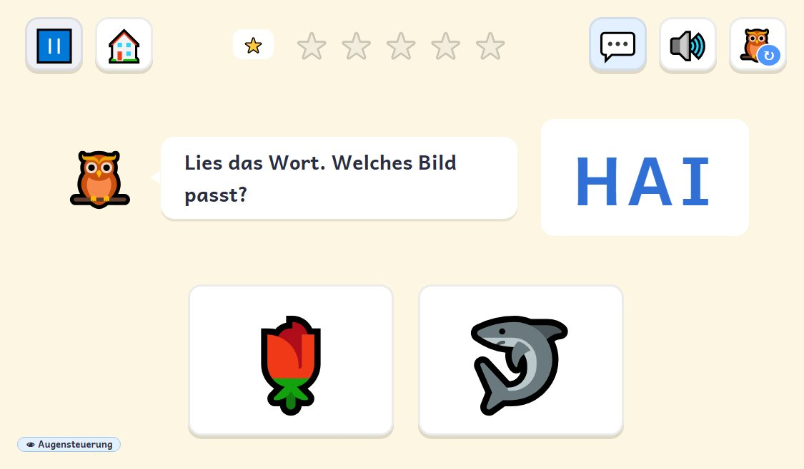
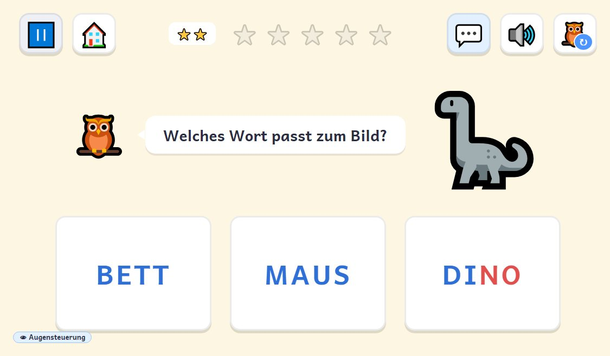
| ⭐ | kurze Wörter, 2 Bilder |
| ⭐⭐ | bis 6 Buchstaben, 3 Antworten, auch Bild → Wort |
| ⭐⭐⭐ | lange Wörter, 4 Antworten mit gleichem Anfangsbuchstaben |
📜 Sätze lesen
Der nächste Schritt nach dem Wörterlesen: Ein kurzer Satz steht da – das Kind sucht das passende Bild. Die falschen Bilder unterscheiden sich jeweils nur in einem Wort vom Satz, deshalb muss der ganze Satz gelesen werden. Der Satz wird nicht vorgelesen; nach zwei Fehlern liest ihn die Eule vor. Ist das richtige Bild gefunden, spricht die Eule den Satz.
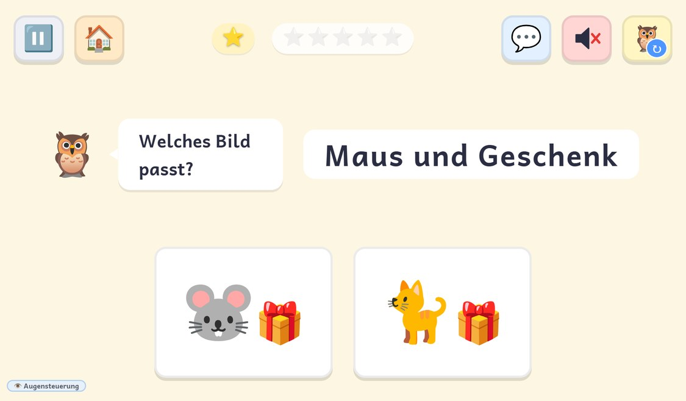
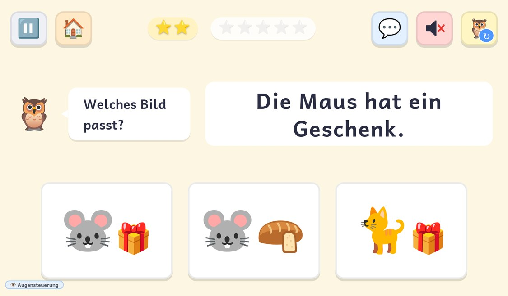
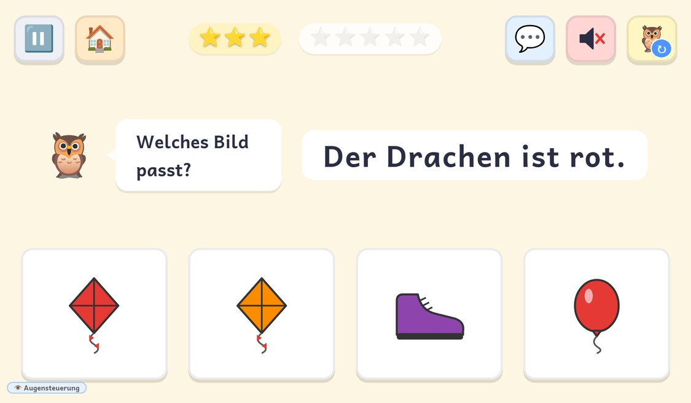
| ⭐ | zwei Wörter: „Maus und Käse“ – 2 Bilder |
| ⭐⭐ | ganzer Satz: „Die Maus hat einen Käse.“ – 3 Bilder (anderes Tier oder anderes Ding) |
| ⭐⭐⭐ | Satz mit Farbe: „Der Fisch ist blau.“ – 4 Bilder (gleiches Bild in anderer Farbe, andere Bilder in gleicher Farbe) |
✏️ Wörter schreiben
Das Wort Buchstabe für Buchstabe aus großen Kacheln zusammensetzen. Die Buchstaben werden so gemischt, dass nie unpassende Wörter oder Abkürzungen nebeneinander stehen.
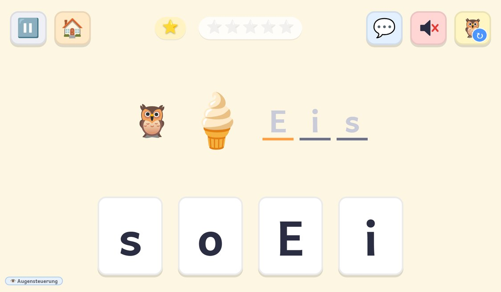
| ⭐ | kurze Wörter, mit Vorlage |
| ⭐⭐ | Vorlage nur als Hilfe |
| ⭐⭐⭐ | ohne Vorlage, längere Wörter |
👏 Silben klatschen
Das Wort wird in Silben vorgesprochen, bei jeder Silbe klatscht es. Das Kind wählt die Anzahl der Silben. Danach erscheinen die Silben nacheinander.
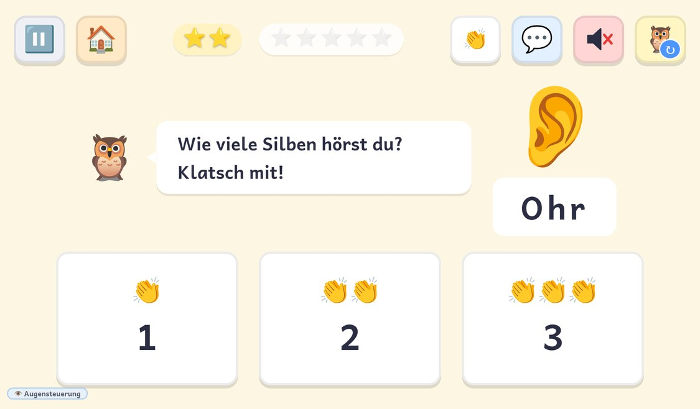
| ⭐ | Wörter mit 1–2 Silben |
| ⭐⭐ | bis 3 Silben |
| ⭐⭐⭐ | bis 4 Silben |
🧩 Silben-Puzzle
Ein Bild wird gezeigt – das Kind legt das Wort aus großen Silbensteinen zusammen („Lege das Wort Roller“). Die Schrift passt sich an, damit auch lange Silben wie „SCHENK“ ganz in den Stein passen. Es wählt immer den Stein, der als Nächstes kommt. Gelegte Steine greifen in der Mitte wie Puzzleteile ineinander, jeder spricht seine Silbe; am Ende wird das ganze Wort in Silben vorgesprochen. Ein falscher Stein wackelt nur („Der kommt erst später“ bzw. „Der gehört nicht zu diesem Wort“); nach zwei Fehlern leuchtet der richtige Stein auf. Kommt eine Silbe doppelt vor (PA-PA-GEI), passt jeder der gleichen Steine.
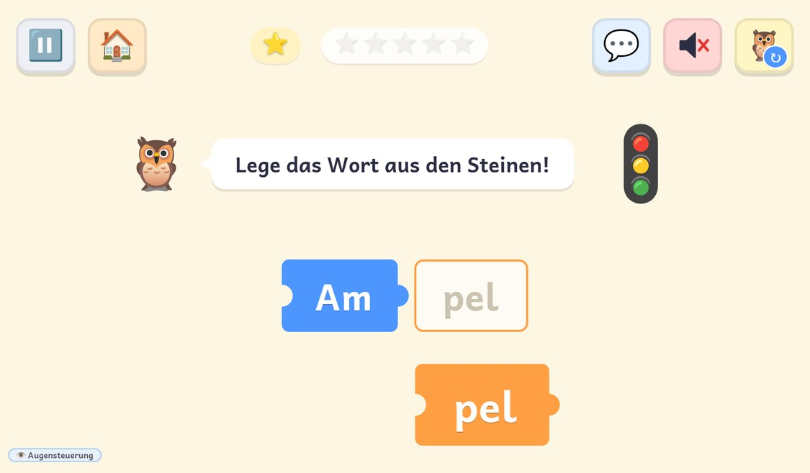
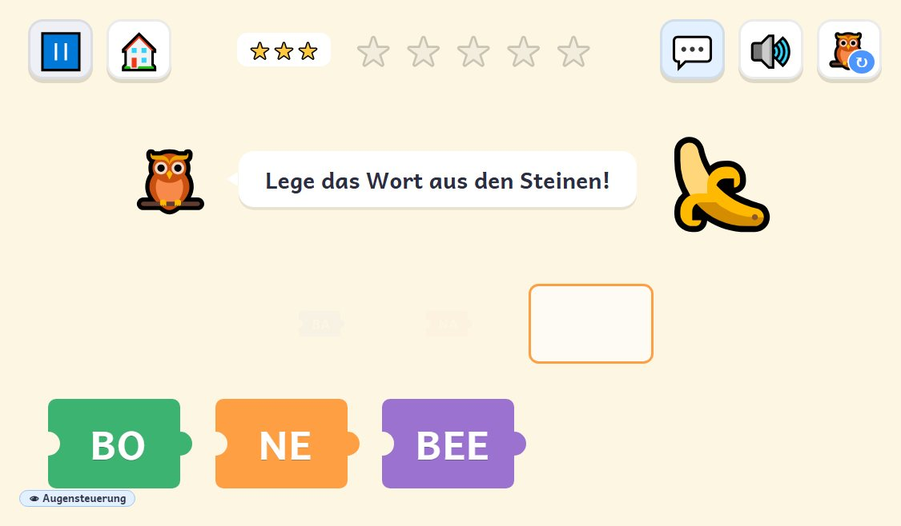
| ⭐ | Wörter mit 2 Silben, nur die passenden Steine, Vorlage in den Lücken |
| ⭐⭐ | 2–3 Silben, 1 falscher Stein, Vorlage erst nach einem Fehler |
| ⭐⭐⭐ | 3–4 Silben, 2 ähnliche falsche Steine (gleicher Anfangsbuchstabe), keine Vorlage |
🃏 Memory
Karten aufdecken und Paare finden: Buchstabe + passendes Bild. Wurde die erste Karte aus Versehen aufgedeckt, wird sie durch nochmaliges Auswählen wieder umgedreht.
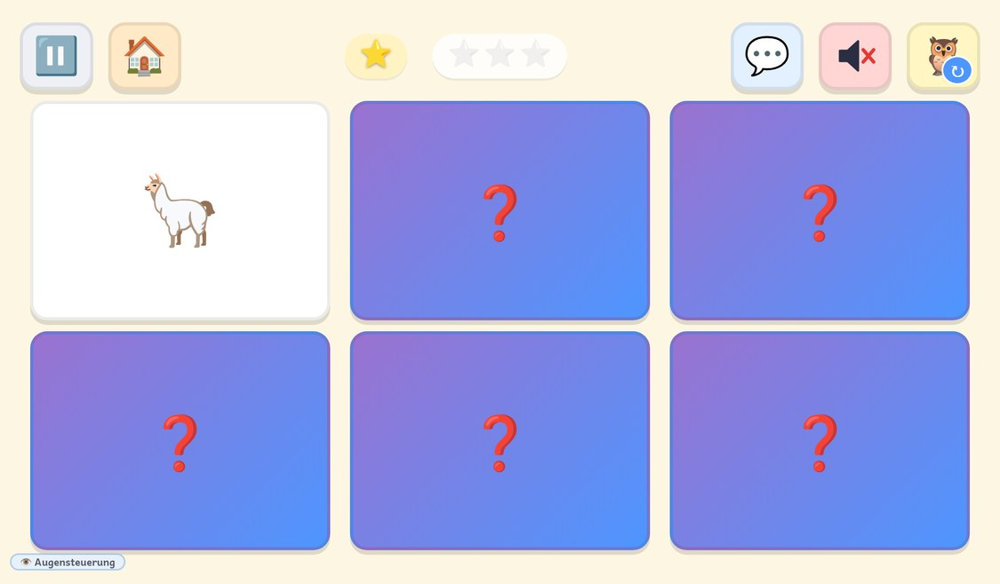
| ⭐ | 3 Paare, Buchstabe + Bild |
| ⭐⭐ | 4 Paare |
| ⭐⭐⭐ | 6 Paare, Wort + Bild |
🎈 Ballon-Jagd
Ballons steigen auf – alle Ballons mit dem gesuchten Buchstaben platzen lassen. Ein Ballon lässt sich erst anwählen, sobald sein Buchstabe ganz zu sehen ist. Gleiche Buchstaben fliegen nie direkt nebeneinander. Das Tempo ist in den Einstellungen einstellbar.
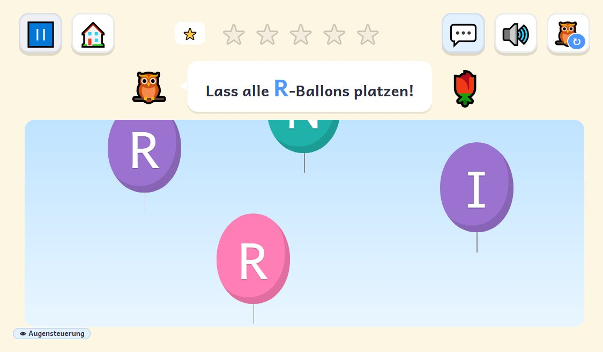
| ⭐ | gemächlich |
| ⭐⭐ | mittel |
| ⭐⭐⭐ | schneller, ähnliche Buchstaben |
🎨 Farben malen
Farbwörter lesen – mehrere Aufgabenarten im Wechsel, 20 Ausmalbilder:
- Ausmalen: Farbwort lesen, Farbtopf wählen → das Bild wird ausgemalt.
- Bild finden: Welches Bild hat diese Farbe?
- Wort finden: Zum bunten Bild das passende Farbwort lesen.
- Farben mischen (Stufe 3): Zwei Farbtöpfe wählen – die Schüssel zeigt, was herauskommt (z. B. Blau + Gelb = Grün). Auch ein falscher Versuch zeigt die entstandene Farbe.
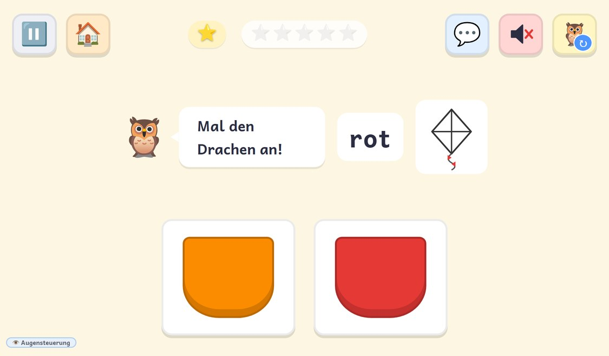
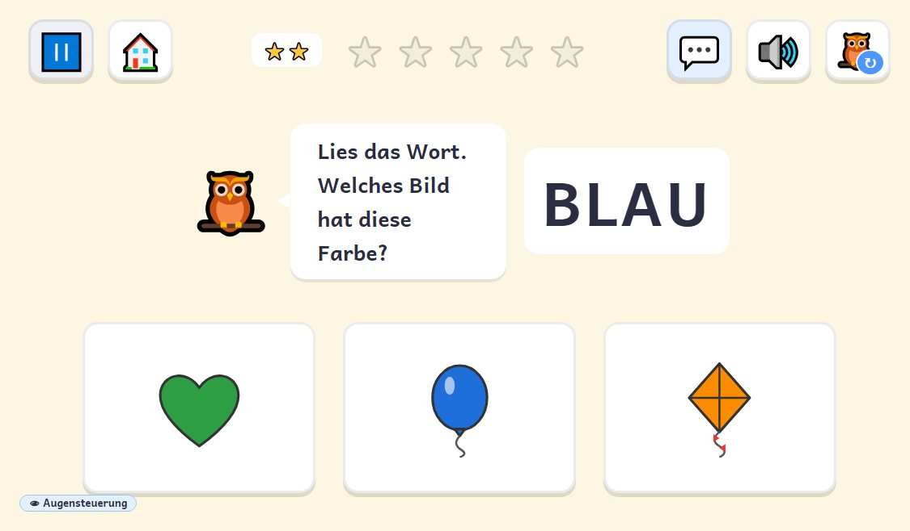
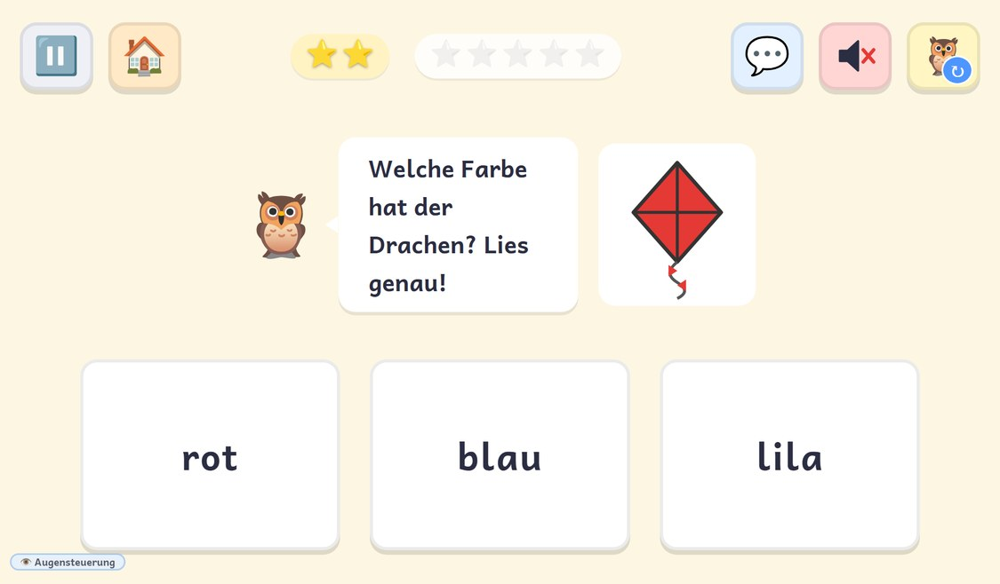
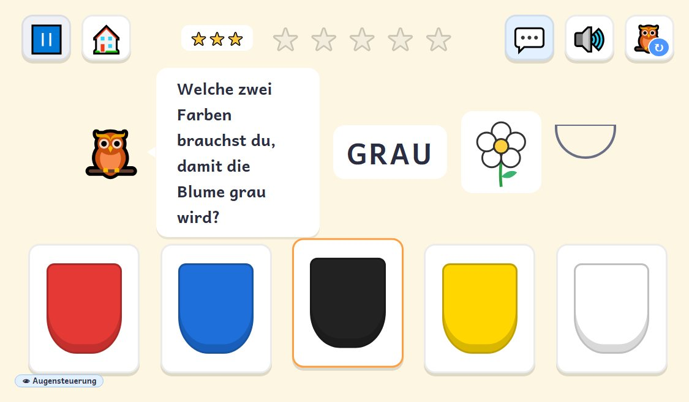
| ⭐ | Wort wird vorgelesen, 2 Antworten |
| ⭐⭐ | selbst lesen, 3 Antworten |
| ⭐⭐⭐ | Farben mischen und ähnliche Wörter (GRÜN/GRAU, BLAU/BRAUN) |
6. Weiter-Knopf und Sticker
Nach einer richtigen Antwort geht es normalerweise automatisch weiter. In den Einstellungen kann man stattdessen den „Weiter“-Knopf wählen: Dann bleibt das Ergebnis stehen, bis das Kind auf ➡️ Weiter schaut (am Ende 🏁 Fertig).
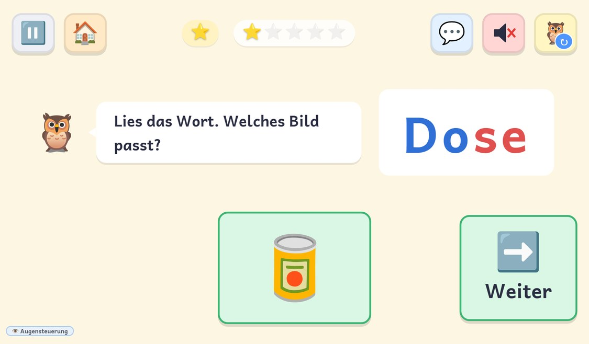
Nach jeder Runde gibt es einen Sticker für das Album („🏆 Meine Sticker“). Passen nicht mehr alle Sticker auf eine Seite, erscheinen rechts zwei große Knöpfe ▲ ▼ zum Blättern. Danach: Nochmal, nächste Stufe (wenn freigeschaltet) oder zurück ins Menü.
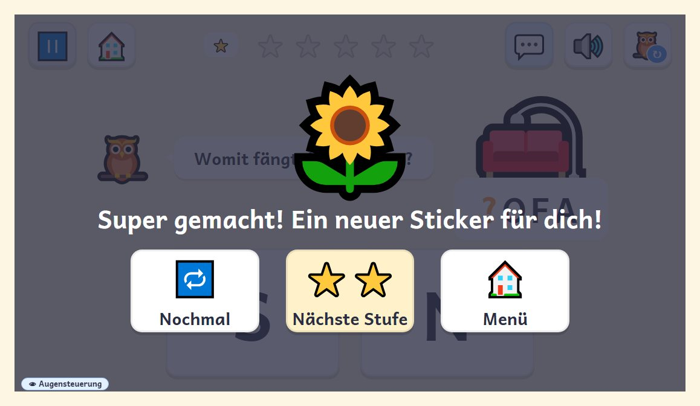
Sticker anschauen: Im Album lässt sich jeder Sticker anschauen oder anklicken. Dann erscheint er groß mit seinem Wort (mit Artikel, z. B. „die Schildkröte“), dem Anfangsbuchstaben in Orange und den Silben. Die Eule liest alles einmal vor: das Wort, „Schildkröte fängt mit S an.“ und die Silben, die dabei nacheinander aufleuchten. Mit den Knöpfen darunter lässt sich jeder Teil noch einmal hören:
- 🔊 – das Wort
- Ss (der Anfangsbuchstabe) – „… fängt mit … an“
- 👏 – die Silben, zum Mitklatschen
Zurück zum Album geht es mit dem Pfeil ⬅️ oben links – dort, wo sonst das Haus 🏠 steht. Die Eule oben rechts liest den Sticker noch einmal vor.
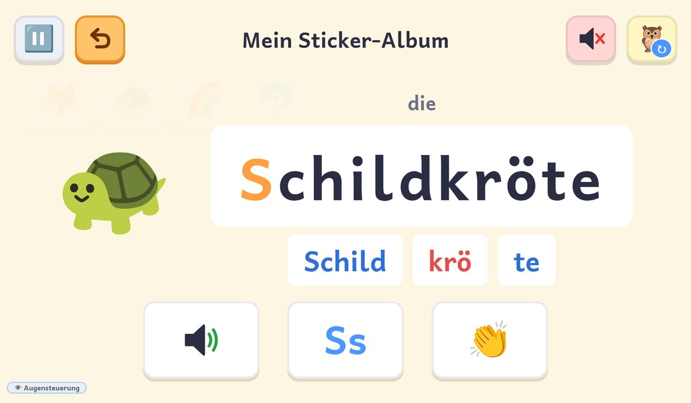
7. Die Mitteil-Tafel 💬
Über 💬 (im Menü und in jedem Spiel) kann sich das Kind jederzeit mitteilen. Das Gewählte wird laut ausgesprochen und groß oben angezeigt. Die laufende Übung verstummt sofort und wartet, bis die Tafel geschlossen ist.
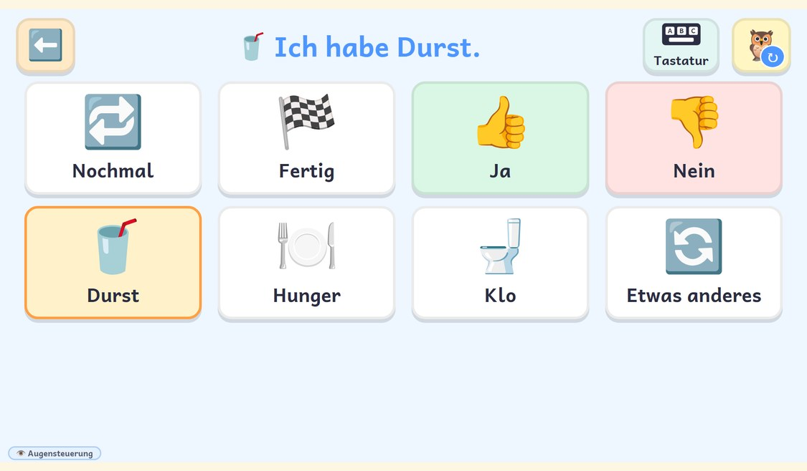
Selbst schreiben: Mit dem Knopf „Tastatur“ oben rechts wechselt die Tafel zur Tastatur (der Knopf heißt dann „Bilder“ und führt zurück). Das Kind wählt Buchstaben und die Satzzeichen , . ?; mit „Leertaste“, „⌫ Löschen“ und 🗑️ oben links (alles löschen – zweimal auswählen, wie bei der Tür; einfach weiter hinschauen genügt) wird der Text bearbeitet, „🔊 Vorlesen“ spricht ihn aus. Die Buchstaben stehen wahlweise in ABC-Reihenfolge oder wie auf der Computer-Tastatur (QWERTZ) – umschalten mit dem Knopf oben rechts oder in den Einstellungen unter „💬 Mitteil-Tafel“. Auf jeder Taste steht nur ein Buchstabe: Bei „Groß und klein“ zeigt die Tastatur am Satzanfang Großbuchstaben, danach Kleinbuchstaben – das wechselt von selbst. Selbstlaute sind farbig. Der Text bleibt stehen, bis er gelöscht wird; mit „Bilder“ geht es zurück zu den Bildern. Längerer Text: Die Lupe 🔍 rechts im Textfeld zeigt den ganzen Text groß in einem eigenen Fenster – mit „Vorlesen“ und „Zurück“. Beim Vorlesen wird das gerade gesprochene Wort gelb markiert. Die Tafel merkt sich, ob zuletzt Bilder oder Tastatur offen waren, und öffnet beim nächsten Mal wieder so.
Wortvorschläge: Über den Buchstaben stehen fünf Vorschläge. Beim Tippen passen sie zum Wortanfang („HU“ → „Hunger“, „Hund“ …), nach einem fertigen Wort zeigen sie, was logisch folgt („ich“ → „möchte“, „habe“, „bin“ …). Ein Vorschlag setzt das ganze Wort samt Leerzeichen ein. Wird ein Nomen klein geschrieben (z. B. „hunger“), korrigiert die Tafel es nach dem Wort automatisch auf „Hunger“. Die Tafel lernt mit: Jeder vorgelesene Text wird gemerkt, oft benutzte Wörter und Wortfolgen rücken nach vorne – getrennt für jedes Profil. Vergessen lässt sich das Gelernte in den Einstellungen („Gelernte Wörter vergessen“).
Was wird beim Schreiben vorgelesen? Einstellbar unter „💬 Mitteil-Tafel“: jeder Buchstabe und jedes fertige Wort (Standard), nur Buchstaben, jedes Wort, nur der fertige Satz (sobald ein Punkt oder Fragezeichen gesetzt wird) oder gar nichts – dann spricht die Tafel nur bei „🔊 Vorlesen“.
Felder hinzufügen: Einstellungen → „💬 Mitteil-Tafel“ → „➕ Feld hinzufügen“ – Bild wählen, Beschriftung und den gesprochenen Satz eintragen (bis zu 12 Felder).
Felder ändern oder löschen: im Textfeld darunter, eine Zeile pro Feld: Bild ; Beschriftung ; Satz, z. B. 🍎 ; Apfel ; Ich möchte einen Apfel., dann „Tafel übernehmen“. Eigene Bilder: [schaukel], [mieder_an], [mieder_aus].
8. Einstellungen und Profile
Im Menü unten rechts: das kleine Zahnrad ⚙ Einstellungen – mit Maus oder Touch bedienen. Die Einstellungen beginnen immer ganz oben. Meldungen (z. B. „Tafel übernommen“) erscheinen oben im Einstellungsfenster. Oben gibt es „📖 Anleitung“ (öffnet diese Anleitung), „💾 Speichern“ (Strg + Enter) und „✖ Beenden“ (Esc, speichert ebenfalls). Alles wird auf diesem Gerät gespeichert.
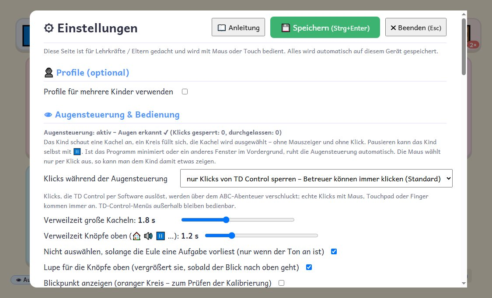
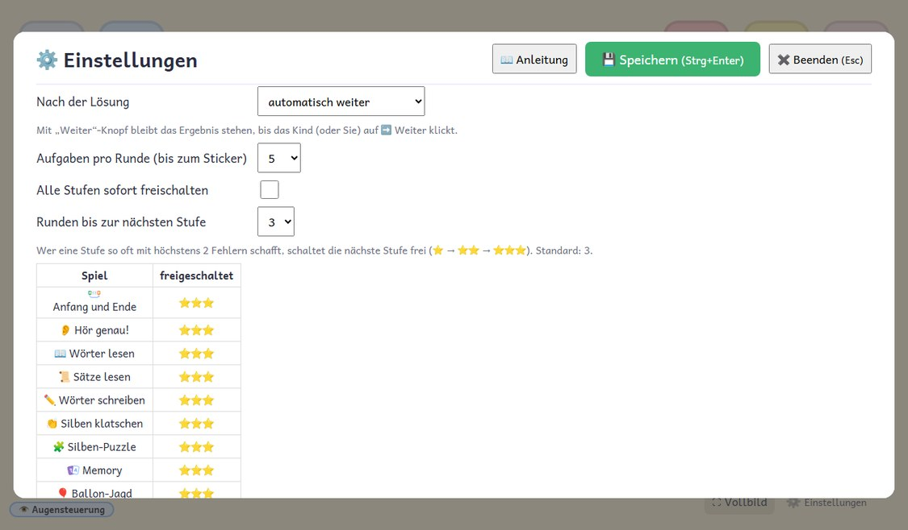
| Bereich | Einstellung | Erklärung |
|---|---|---|
| 👤 Profile | Profile für mehrere Kinder | optional – siehe „Profile für mehrere Kinder“ |
| 👁 Augensteuerung & Bedienung | Status der Augensteuerung | zeigt, ob die Augen gerade erkannt werden, ob pausiert ist oder ob das Programm im Hintergrund ruht (die Augensteuerung selbst ist immer aktiv) |
| Klicks während der Augensteuerung | Standard: nur Klicks von TD Control sperren – Betreuer können immer klicken. Alternativ: alle Klicks sperren, solange Augen erkannt werden / immer / alle erlauben | |
| Verweilzeit große Kacheln | Wie lange das Kind auf eine Kachel schauen muss (0,4–4 Sekunden, Standard 1,8) | |
| Verweilzeit Knöpfe oben | für 🏠 🔊 ⏸️ ↻ 💬 🚪 (0,4–4 Sekunden, Standard 1,2) | |
| Nicht auswählen, solange die Eule vorliest | verhindert, dass schon während der Aufgabe geantwortet wird (nur bei Ton an) | |
| Lupe für die Knöpfe oben | vergrößert die Knöpfe oben, sobald der Blick nach oben geht (Standard: an) | |
| Blickpunkt anzeigen | oranger Kreis an der Blickposition – zum Prüfen der Kalibrierung | |
| Mauszeiger ausblenden | Zeiger unsichtbar (Standard: sichtbar, damit die Betreuung zeigen kann) | |
| Ohne Grafikbeschleunigung starten | nur falls das Bild flackert; wirkt beim nächsten Start | |
| 🔊 Ton & Sprache | Ton aus | Spiele stumm (auch über 🔊 oder F8) |
| Lautstärke | 10–100 % – gilt für Eule, Silben und Geräusche (die Mitteil-Tafel spricht ebenfalls in dieser Lautstärke) | |
| Stimme | 🔊 = Stimmen der Windows-Sprachausgabe (z. B. des Tobii-Geräts), außerdem „Microsoft Katja“ u. a. – keine „Multilingual“-Stimme | |
| Sprechtempo | Langsamer oder schneller sprechen | |
| Antworten beim Anschauen vorlesen | Kacheln werden beim Anschauen vorgelesen (wo es die Lösung nicht verrät) | |
| Geräusche | Jubel, Plopp, Klatschen | |
| 🎯 Aufgaben & Stufen | Nach der Lösung | automatisch weiter oder „Weiter“-Knopf |
| Ballon-Tempo | sehr langsam, langsam, normal, schnell | |
| Aufgaben pro Runde | 3 bis 10 Aufgaben bis zum Sticker | |
| Schrift | GROSSBUCHSTABEN, Groß und klein oder nur klein | |
| Silben farbig | Silben beim Lesen abwechselnd einfärben | |
| Runden bis zur nächsten Stufe | wie oft eine Stufe mit höchstens 2 Fehlern geschafft werden muss (1–5, Standard 3) | |
| Alle Stufen freischalten | alle Stufen sofort verfügbar | |
| Freischaltungen zurücksetzen | alle Spiele wieder auf Stufe 1 | |
| 🔤 Buchstaben | Welche Buchstaben geübt werden | Mit den Buchstaben beginnen, die im Unterricht eingeführt sind (z. B. M, A, L, I, O, S, E), und neue dazunehmen. Kennt das Kind erst wenige, kommen auch Wörter mit einem neuen Buchstaben dazu. Schnellauswahl mit Knöpfen: Alle auswählen, Alle abwählen (danach die gewünschten ankreuzen), Nur Selbstlaute (A E I O U), + Selbstlaute dazunehmen und Start-Buchstaben (M A L I O S E). Selbstlaute sind farbig markiert. Mindestens 2 Buchstaben müssen ausgewählt sein. |
| 💬 Mitteil-Tafel | Felder bearbeiten | siehe Kapitel 7 |
| 📊 Lernstand | Übersicht | Welche Buchstaben sicher sind und welche noch nicht. Schwierige Buchstaben kommen automatisch häufiger dran. Lernstand und Sticker lassen sich zurücksetzen. |
Profile für mehrere Kinder (optional)
Nutzen mehrere Kinder das Programm, bekommt jedes Kind ein eigenes Profil. Jedes Profil speichert automatisch seine Einstellungen (z. B. Verweilzeiten, Stimme, geübte Buchstaben), den Lernstand, die freigeschalteten Stufen, die Sticker und die Mitteil-Tafel.
- Einstellungen → „👤 Profile“ → „Profile für mehrere Kinder verwenden“ anhaken.
- „➕ Neues Profil“ – Namen eingeben und ein Bild wählen (siehe Eingaben). Das neue Profil übernimmt die Einstellungen des aktuellen Profils; Lernstand, Stufen und Sticker beginnen leer.
- Mit „Umbenennen“ lassen sich Name und Bild (ein Emoji) ändern, mit „Wechseln“ das Profil wechseln, mit „Löschen“ ein Profil samt Daten entfernen.
Sind Profile eingeschaltet, zeigt der Startbildschirm „Wer spielt?“ mit einer Kachel pro Kind – das Kind wählt sich selbst per Blick aus. Im Menü begrüßt die Eule das Kind mit Namen („Was möchtest du spielen, Lena?“).
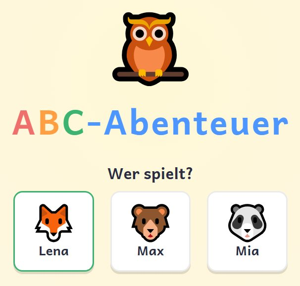
Wie viele Profile? Bis zu 12. Bis 5 Kinder erscheinen am Startbildschirm große Kacheln in einer Reihe; ab 6 Kindern zwei Reihen mit etwas kleineren Kacheln.
Wer Profile wieder ausschaltet, arbeitet mit dem gerade aktiven Profil weiter; die anderen Profile bleiben gespeichert.
Eingaben: Bildschirmtastatur und Emoji-Auswahl
Beim Anlegen oder Ändern eines Profils und beim Hinzufügen eines Feldes zur Mitteil-Tafel öffnet sich ein Eingabefenster:
- Die Bildschirmtastatur von Windows öffnet sich automatisch, sobald ein Feld angetippt wird. Das Eingabe- bzw. Einstellungsfenster rückt dann nach oben, und die Tastatur dockt direkt darunter an – sie überdeckt nichts. Die angeklickte Zeile bleibt sichtbar. Schließen lässt sie sich mit ihrem eigenen ✕ oder mit „⌨ Bildschirmtastatur ein/aus“; beim Übernehmen oder Abbrechen schließt sie sich von selbst.
- Beim Feld „Bild“ öffnet sich zusätzlich die Windows-Emoji-Auswahl. Sie lässt sich jederzeit auch selbst öffnen: Windows-Taste + . (Punkt). Darunter gibt es außerdem eine Auswahl häufiger Bilder zum Antippen.
- Enter übernimmt, Esc bricht ab.
Das ABC-Abenteuer ist ein Windows-Programm – auf iPad/iPhone (iOS) läuft es nicht.
Sichern, Wiederherstellen und alles löschen
Unter Einstellungen → „💾 Sichern & Wiederherstellen“:
- „💾 Sicherung speichern …“ speichert alle Profile mit Lernstand, Stufen, Stickern, Einstellungen und Mitteil-Tafel in eine Datei (z. B. in „Dokumente“ oder auf einen USB-Stick). So geht nichts verloren, und alles lässt sich auf ein anderes Gerät mitnehmen.
- „📂 Sicherung laden …“ holt eine solche Datei zurück. Achtung: Alle jetzigen Daten werden dabei durch die Sicherung ersetzt – das Programm fragt vorher nach.
- „🗑 Alle Kinderprofile und Daten löschen …“ entfernt alles vollständig (mit zweifacher Rückfrage). Einzelne Profile lassen sich unter „👤 Profile“ mit „Löschen“ entfernen – jedes außer dem gerade aktiven.
Kann das Programm nicht speichern (z. B. weil der Speicher voll oder gesperrt ist), erscheint ein deutlicher Hinweis – oben in den Einstellungen und kurz im Bild.
9. Stimme und Silben
- Fertige Tondateien: Buchstaben, alle Wörter, Silben, Sätze, Spielanweisungen und Lob sind als Tondateien dabei (Stimme von ElevenLabs, Ordner
files/audio) – sie klingen immer gleich und richtig, auch ohne Internet. - Buchstaben als Laut: Zum Lesenlernen spricht die Eule Buchstaben als Laut („l“, „m“, „k“), nicht als Namen („el“, „em“, „ka“). Umstellen: Einstellungen → „Buchstaben sprechen als“.
- Stimme: Für alles ohne Tondatei (z. B. selbst geschriebene Texte der Mitteil-Tafel) spricht die Windows-Stimme. Unter Einstellungen → „Stimme“ stehen oben (mit 🔊) die Stimmen der Windows-Sprachausgabe – auf Tobii-Geräten sind das z. B. die mitgelieferten Acapela-Stimmen, sofern sie für Windows freigegeben sind. Darunter folgen die übrigen Windows-Stimmen wie „Microsoft Katja“. Mit „Test“ probehören.
- Keine „Mehrsprachig/Multilingual“-Stimme wählen – sie liest kurze Silben oft englisch.
- Silben: Die Silben aller mitgelieferten Wörter sind eigene Tondateien: „La-ma“, „Me-lo-ne“, „Af-fe“.
10. Eigene Wörter
Die Wörter stehen in der Datei files/data.js (mit dem Windows-Editor öffnen). Eine Zeile ergänzen, zum Beispiel:
{ w: "Mond", g: "der", e: "🌙", s: "Mond", lg: true },
| Feld | Bedeutung |
|---|---|
w | das Wort |
g | Artikel: der, die oder das |
e | das Bild (ein Emoji) |
s | die Silben, mit Bindestrich getrennt, z. B. "Ba-na-ne" |
lg | true, wenn das Wort lautgetreu ist (gut zum Schreiben) |
sp | (optional) Aussprache der Silben, falls sie falsch klingt |
11. Probleme und Lösungen
| Problem | Lösung |
|---|---|
| Das Bild flackert oder Knöpfe werden falsch angezeigt | Einstellungen → „Ohne Grafikbeschleunigung starten“ anhaken, Programm schließen und neu starten. |
| Anschauen wählt nichts aus | Einstellungen → „Augensteuerung“: Steht dort „nicht gefunden“, läuft die Tobii-Software nicht. Steht „gerade keine Augen erkannt“: Sitzposition prüfen. Steht „ruht“: Das Programm ist nicht im Vordergrund – einmal ins Programm tippen oder klicken. Steht unten links „⏸ Augensteuerung pausiert“: auf ▶️ schauen. |
| Meldung „WebView2 fehlt“ | Die Anzeige-Komponente von Microsoft fehlt (sehr selten). Die Meldung bietet den kostenlosen Download an. |
| Kein Ton | Lautsprecher oben prüfen (🔇 = Ton aus); F8; Lautstärke von Windows prüfen. |
| Es wird zu schnell oder doppelt ausgewählt | In den Einstellungen nachsehen, ob bei „Klicks gesperrt“ etwas gezählt wird. Steht dort 0, obwohl TD Control klickt: bei „Klicks während der Augensteuerung“ „alle Klicks sperren, solange Augen erkannt werden“ wählen – oder die Klick-Funktion von TD Control pausieren. |
| Die Tobii-Stimme fehlt in der Liste | Nur Stimmen, die für die Windows-Sprachausgabe freigegeben sind, können verwendet werden. Manche Stimmen sind nur für TD Snap/Communicator lizenziert. |
| Es wird zu viel aus Versehen ausgewählt | Verweilzeiten in den Einstellungen verlängern oder den Pause-Knopf ⏸️ nutzen. |
| Die Einstellungen sind weg | Sie werden pro Gerät gespeichert – auf einem neuen Gerät neu einstellen. |
| Die Stimme klingt komisch oder englisch | In den Einstellungen eine Stimme ohne „Multilingual“ wählen, am besten „Katja“. |
| Nach einem Update sieht etwas alt aus | Programm ganz schließen und neu starten. |
| Etwas funktioniert nicht wie erwartet | Das Programm schreibt Fehler in ein Protokoll: %LOCALAPPDATA%\ABC-Abenteuer\protokoll.txt (in die Adresszeile des Windows-Explorers eingeben). Diese Datei hilft bei der Fehlersuche. |
ABC-Abenteuer, Version 4.1 (Stand 19.11.2026) – Idee und Umsetzung: Natascha Toman, selbst UK-Nutzerin. Umgesetzt mithilfe von KI.